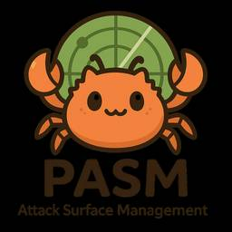

Pepabo Tech Portal
https://tech.pepabo.com/
GMOペパボのエンジニア・デザイナーによる技術情報のポータルサイト
フィード

AI前提のセキュリティ対策室での仕事 8
8
Pepabo Tech Portal
セキュリティ対策室のn01e0です。この記事では、セキュリティ対策室で私がAI(広義)をどのように活用しているかを紹介します。Attack Surface Managementの自動化から、機械学習による異常検知、AIエージェントを活用した脆弱性診断まで、私の業務の各領域でAIが前提となりつつある現状をお伝えします。PASM (Pepabo Attack Surface Management) scratchコンテナで動くRustスキャナドメインの自動収集AI x RustAgentic ML 令和最新版「ビッグデータをエーアイで良い感じに」データの正規化とgit管理Shodanデータの可視化・クエリ基盤スナップショットの差分抽出IPの分類ポートの希少性スコア異常検知Human-in-the-LoopMLは過渡的な手段Agenticな脆弱性診断 (Unravelling) 人間の脆弱性診断フローを落とし込むLLMに任せる部分とスクリプトに任せる部分診断フローWhiteboxとGrayboxトリアージと修正False Negativeが増えるくらいならFalse Positiveを許容するまとめPASM (Pepabo Attack Surface Management)PASMはPepabo Attack Surface Managementの略称で、独自のスキャナとShodanなどの外部ソースからの情報収集を組み合わせ、Attack Surfaceの把握と管理を行うプロジェクトです。スキャナはECS Fargate(Spot)上で稼働しており、Rustで書かれたバイナリをstatic linkでビルドしてscratchコンテナに載せています。コンテナサイズはわずか6.7MBで、1日あたりの実行コストは合計で約50円です(Shodan APIの方が圧倒的に高いです)。スキャンは主にドメインを対象として実行しており、対象ドメインはAWSやCertificate Transparency、社内DNSから自動収集しています。監視対象のドメインは4,000件以上にのぼります。主な検出項目として、意図せず公開されているエンドポイントの検出、Subdomain Takeoverリスクの検出、証明書の有効期限監視、WAFの動作確認、HTTPレスポンスヘッダからの情報漏洩検出などが
3日前

「BCPを踏まえたインシデント対応演習」について発表しました 1
Pepabo Tech Portal
こんにちは！SUZURI・minne事業部 minneグループのtossy（@tossy）です。2026年3月15日に開催された 「AWS入門のためのAWS体験話。だから私はAWS。」 で「BCPを踏まえたインシデント対応演習」というタイトルで登壇しました。本記事では、発表内容の概要についてお伝えします。発表資料発表の概要GMOペパボでは年に一度、インシデントの対応力向上を目的とし、インシデント対応演習を実施しています。過去に実施したインシデント対応演習の内容は以下をご覧ください。minneのインシデント対応演習についてご紹介します今回の発表では、事業継続計画（BCP）の観点から、DB障害が発生した場合の復旧を迅速にするためのインシデント対応演習についてお話ししました。BCPとは、企業が自然災害などの緊急事態に遭遇した場合において、事業継続のための方法、手段などを取り決めておく計画のことです。特にDB障害については、復旧のための手順書はあるが実際に対応したことがないという状況が想定されます。そこで、「知っている」と「やったことがある」では実際に対応するときの行動が大きく変わってくるため、そのギャップを演習で埋めることを目的としました。演習の背景AWSのAZ障害によるDB影響へ備える理由として、以下のような背景があります。ランサムウェアによるDB暗号化の被害が増加しており、IPAの「情報セキュリティ10大脅威 2025」でも組織向け脅威第1位に選出2025年4月に実際にAWS東京リージョンのAZでEC2インスタンスへの接続に影響が出る障害が発生このことから、AWSのAZ障害が発生したときに備えておく必要があると考えました。演習の構成実際の障害を想定した机上訓練と手を動かす実機演習の2部構成で実施しました。机上訓練では、事務局が「AWSのあるリージョンのとあるAZにて障害が発生している」という第一報を共有し、演習者がチームで3つのチェックポイントに答えていく形式で対応をシミュレーションしました。事前にハンドラ・影響調査・マネージャ連絡/書記の役割分担を行い、Slackチャンネルを作成するなど本番に近いフローで実施しました。机上訓練の振り返りとしては、本番に近い状態でのAWSのAZ障害のシミュレーションができた一方で、用意したシナリオに対してサービス影響ありと報告を受けた
5日前

レガシーなWebアプリケーションリポジトリに対してAIエージェントを活用してCI環境を整備した話
Pepabo Tech Portal
こんにちは！ロリポップ・ムームードメイン事業部ムームードメイングループの中村(@litencatt）です。普段はエンジニアリングリードとしてムームードメイングループのサービスの開発・運用をメインで担当しています。今回は、PHP 4.4製のレガシーな社内業務用Webアプリケーションに対して、AIエージェント（Claude Code）を活用しながらDocker開発環境の構築とCI上でのユニットテスト自動実行を実現した話を紹介します。レガシーコードへのCI整備は「大変そう」という印象で後回しにされがちですが、AIエージェントをどう働かせるかを意識することで、従来よりも大幅に効率よく進められました。その具体的な進め方も合わせてお伝えします。背景：テストはあるのに、CIで実行されていなかったAIエージェントの働かせ方：基本方針 「AIが得意なこと」に仕事を割り振る人間は「判断」と「レビュー」に集中するStep 1: スタンドアロンDocker環境の構築 AIの働かせ方：既存コードを渡してスキャフォールドを生成Step 2: CIでテストを動かす 結果詰まったポイントと解決策 (1) mysql_real_escape_string() による謎の12～16分ハング(2) PHP 4バンドルのMySQLクライアントとMySQL 5.6の非互換(3) DotReporterのドットがCIで表示されない(4) CI専用Dockerfileの作成とPHP拡張のビルド失敗(5) Cannot redeclare エラー（PHP 4.4の名前空間問題）(6) Flaky Test の修正(7) AllTestsRoot.php のCWD依存AIエージェントとの協業パターンまとめまとめ背景：テストはあるのに、CIで実行されていなかった対象リポジトリにはSimpleTestを使ったユニットテストが97ファイル・480メソッド存在していました。SimpleTest自体も当時は広く使われていたテストフレームワークですが、現在のPHP界隈ではPHPUnitに置き換えられて久しいレガシーなフレームワークです。CIのパイプラインにはlintとセキュリティチェックのみが含まれており、これらのユニットテストはCI上で一度も実行されていない状態でした。アプリケーション自体はKubernetes上で稼働してお
10日前
Claude Code実践テックトーク：asken × GMOペパボ × Omiai 3社合同LTイベントを開催しました
Pepabo Tech Portal
はじめにGMOペパボは、asken株式会社（以下asken）とOmiai株式会社（以下Omiai）との共催イベント「Claude Code実践テックトーク」を2026年2月24日に開催しました。本記事では、当日の様子やGMOペパボのパートナーの登壇セッションハイライトをレポートします。イベント概要今回のイベントは、Claude Codeを開発で活用しているものの、実際の開発現場で「どう使い込めばいいのか」「どこまで任せていいのか」といった課題を感じているエンジニア、プロダクト開発に関わる方に向けた、Claude Codeの実践ノウハウ共有イベントとして企画されました。asken、GMOペパボ、Omiaiの3社から、ドキュメント作成、実装補助、レビュー、思考整理など、日々の業務の中で実際のユースケースを紹介いたしました。項目 内容 テーマ 「Claude Code実践テックトーク」 日時 2026年2月24日（火）19:00 〜 対象聴講者 Claude Codeを業務で使用しているエンジニア、社内でのAIツール活用に課題を感じているエンジニアリングマネージャー、他社がどこまで使いこなせているか知りたい方 発表順 タイトル 登壇者（敬称略） 企業 1 Claude Code の Skill で複雑な既存仕様をすっきり整理しよう 髙橋 佑一朗 asken 2 Claude Codeマーケットプレイス運用の実践 深野 悠吾 GMOペパボ 3 PRが出るまでの課題をClaude Codeで仕組み化した話 太田 龍乃介 Omiai 4 BedrockをClaude CodeでProviderとして使用 中山 一仁 GMOペパボ 5 Androidエンジニア、Claude Codeを指揮してAWSを超越する 佐藤 忠 asken 6 Claude Code形骸化させない。KPI設計とチーム別導入 大森 翔太朗 Omiai GMOペパボ登壇内容のハイライト本セッションでは、GMOペパボ・asken・Omiaiの3社から各2名、計6名のエンジニアが、10分の発表を行いました。1. 全自動で回せ！Claude Code Marketplace 運用術登壇者：ugo（事業開発部）事業開発部のugoより、社内におけるClaude Codeの活用を「個人のツール」から「組織の資産」へと昇華
18日前
「開発生産性のその先へ、AI生産性について語りたい」に登壇してきました
Pepabo Tech Portal
こんにちは！ロリポップ・ムームードメイン事業部ムームードメイングループのはるおつ（@haruotsu_hy）です。2026年2月26日に開催された 「開発生産性のその先へ、AI生産性について語りたい」 で登壇してきました。本記事では、発表内容の概要についてお伝えします。発表資料発表の概要今回の発表では、「AIをどう使うか」だけでなく「AIが活きる構造をどう作るか」 というテーマでお話ししました。各種AIツールの普及により、「設計→分割→実装→設計レビュー→コードレビュー→マージ」までの各ステップの速度は大きく向上しています。一方で全体をみてみると、AIで各ステージが速くなっても、直列依存のボトルネックが残っている限り、全体のスループットは上がりません。今回、実際にムームードメインのチームで行っている開発体制を例に挙げながら、 開発サイクルのボトルネックを構造的に排除している事例を紹介しました。開発サイクルの6つのボトルネック開発サイクルを「設計 → 分割 → 実装 → 設計レビュー → コードレビュー → マージ」に分解し、それぞれのフェーズで発生していたボトルネックを洗い出し、それぞれに対する解決策を紹介しました。# ボトルネック 構造的な原因 解決策 1 設計が伝わらない パイプライン先頭のストール ドキュメントドリブン開発 2 タスク分割が遅い 順序実行するしかない AIとの協業によるタスク分割 3 実装が直列 共有リソース競合 リソースの自動分離、削除システムの構築 4 設計レビューが属人的 コード化されていないチェック スキル化による並列レビュー 5 コードレビューが属人的 基準がなく自動化不可 CCA + ガイドライン自動選択 6 レビュー待ちが長い 待ちが発生している レビュー依頼リマインド自動化 ドキュメントドリブン開発（DocDD）Design Doc を「判断の記録」と位置づけ、リポジトリ内に以下の構造で管理しています。docs/product/design-doc/├── YYYYMM-NNN_プロジェクトA/│ └── 設計書.md├── YYYYMM-NNN_プロジェクトB/│ ├── 基盤構想.md│ ├── 設計方針_結論.md│ └── Before-After.md書くのは WHY（なぜこの設計にするのか）、WHAT（何を作るのか、
18日前
Issueの本質を見極める — SREとしての信頼性の築き方
Pepabo Tech Portal
こんにちは、技術部 技術基盤グループの kmsnです。先日 Tamachi.sre で「Issueを見極める信頼性」というテーマで登壇しました。本記事では、登壇内容をもとに、SREとして日々の業務の中でどのように「本当に解くべきIssue」を見極めているか、その考え方と実践についてまとめます。なぜこのテーマを書こうと思ったか日々の運用や改善活動に取り組んでいると、多くの課題に直面します。しかし、それらすべてを同時に解決することはできません。限られた時間とリソースの中で、「どのIssueに向き合うべきか」を見極めることは非常に重要だと感じています。私自身、コスト最適化や運用改善に取り組む中で、表面的な問題と本質的なIssueは異なるということを何度も経験してきました。最初は「とにかく改善する」ことに集中していましたが、次第に「どの改善が本当に価値を生むのか」を考えるようになりました。本記事では、そうした経験から得た「Issueを見極めるための考え方」についてまとめます。「Issueを見極める」とは何か無数に存在する問題の中から、解決することで未来が変わる「本質的な課題」を選択して、そこにリソースを集中することです。そのために意識している軸が5つあります。【構造】 症状ではなく、裏側にある仕組みを捉える表面上のエラーログを消すのではなく、「なぜそのエラーが起きうる構成になっているのか」というアーキテクチャやコードの構造に目を向けます。【継続性】 一過性のノイズか、未来に続く課題かたまたま一度起きただけの事象にリソースを割きすぎていないか。今後も繰り返され、積もり積もって大きな損失を生む「継続的な痛み」を優先して解決します。【根本改善】 対症療法を捨て、再発の芽を摘む再起動して直すのは「運用」ですが、再起動しなくて済む仕組みを作ることが重要です。仕組みそのものをアップデートし、同じ問題が二度と起きない状態を目指します。【価値】 「量の解決」から「価値の創出」へ解決したタスクの数（量）に満足せず、その改善が「ユーザー体験」や「チームの開発生産性」にどれだけ寄与したか（価値）で、優先順位を判断します。【学習】 仮説検証を回し、小さく進化し続ける最初から完璧な正解を求めすぎず、最小限のコストで試してフィードバックを得ます。その学びを次の改善に活かす「学習のループ」こそが、不確実
24日前
Agent Ready: 技術部が挑むAIエージェント前提の技術基盤づくり
Pepabo Tech Portal
こんにちは、ペパボで技術部部長をしているkenchanです。「閃光のハサウェイ」3作目が公開されるまで健康でいるために、運動を再開しました。この記事では、ペパボ技術部の2026年方針「Agent Ready」について紹介します。私たちがこの方針に至った背景と、具体的に何をやろうとしているのかをお伝えできればと思います。技術部は、GMOペパボの全事業部門にわたるインフラ・データ基盤・情報システム（コーポレートエンジニアリング）の3つを横断的に担う部門です。ロリポップ！やムームードメインといったホスティングサービス、カラーミーショップ・minne・SUZURIなどのEC・ハンドメイドプラットフォームのインフラ運用から、全社のデータ基盤の整備、社内ITの整備・運用まで、各事業部がプロダクト開発に集中できるよう技術的な土台を支えています。はじめに: なぜ今、私たちは「前提」を書き換えるのかAIの進歩は不可逆です。「逆張り」せず、この波に全力で乗る——それが2026年の技術部の基本姿勢です。私たちの現場でも、2025年を通じてAIの活用は確実に広がりました。コードレビューの補助、障害調査時のログ要約、ドキュメント作成の効率化。個々のエンジニアがAIを「便利な道具」として使いこなす場面は増えています。しかし、それは個人の生産性向上にとどまっており、組織やサービスの基盤そのものは変わっていません。2026年、ペパボ技術部は「Agent Ready」を方針として掲げます。技術部が先陣を切り、組織とサービスの両方がAIエージェント前提となるための基盤を作るという宣言です。ここで重要なのは、AIの性能がいくら向上しても、それだけでは組織は変わらないということです。AIが能力を最大限に発揮するためには、エージェントの「手足」となるインフラ、「脳」となるデータ、そして「意志」となる文化の3つが揃っている必要があります。私たちはこれをToolset・Dataset・Mindsetの3本柱として整備していきます。Toolset: Agent-Firstのための「手足」を作る1本目の柱は「Toolset」——AIエージェントが動ける手足を作ることです。現状の課題ペパボの技術部はこれまで、数十万件規模のホスティングサービスや複数のEC・ハンドメイドプラットフォームを支えるインフラを運用してきました
1ヶ月前
フロントエンドカンファレンス関西 2025 に参加 & 登壇してきました！
Pepabo Tech Portal
こんにちは！GMO ペパボのてつをです。この度、フロントエンドカンファレンス関西 2025に参加・登壇してきたので、その内容をご紹介します。フロントエンドカンファレンス関西とは「IGNITE KANSAI – 出会いが共鳴し、次の誰かを動かす」をコンセプトに、2025年11月30日にマイドームおおさかで開催された、Webフロントエンド技術に特化したカンファレンスです。会場はワンフロアを貸し切り、2つのトークルームで並行してセッションが行われました。基調講演やレギュラートークに加え、LTやスポンサーブースも設けられ、全19セッションが展開されました。また、「Ask the Speaker」として、セッション中に気になった話題についてスピーカーに直接質問できるスペースが設けられており、スピーカーとコミュニケーションできる場が提供されていました。登壇についてここからは、今回私が発表させていただいた内容について紹介します。Matter.jsでつくる「ぷにゃっ」と動く物理演算Webエフェクトとパフォーマンス改善本発表では、JavaScript製の2D剛体物理エンジンであるMatter.jsを使って、「ぷにゃっ」とした軟体風のアニメーション表現を実現する方法について紹介しました。Matter.jsは剛体物理エンジンであるため、そのままでは軟体のような柔らかい表現はできません。そこで、衝突イベントから得られる法線ベクトル（衝突方向）と速度をもとに、CSSアニメーションで衝突方向と速度に応じた縮みを表現するアプローチを紹介しました。主な内容Matter.jsの基本的な使い方（エンジン作成、レンダラー作成、オブジェクト追加）Eventsを活用した衝突方向・速度の推定方法物理計算 → JavaScript → CSSというイベント駆動の描画反映の仕組みまた、パフォーマンス改善についても紹介しました。オブジェクト数の上限管理とFPS制限による計算コストの削減エンジンと静的ボディの再利用イベントリスナーや物理オブジェクトの適切なクリーンアップによるメモリリーク防止登壇の感想今回はLT枠（5分）での発表でしたが、物理演算をWebエフェクトに応用するという内容に対して、多くの方に興味を持っていただけました。限られた時間の中でしたが、実際の使用例と注意点の両面を伝えられたのではないかと思います。
1ヶ月前
BuriKaigi 2026 に参加 & 登壇してきました！
Pepabo Tech Portal
こんにちは！この度、パートナーのどすこい、yukyan、ikechi、ugoの4名がBuriKaigi 2026に参加・登壇してきたので、その内容をご紹介します。BuriKaigi 2026 とは年に一度、寒ブリの季節にソフトウェア開発・ITにおける各分野で最前線で活躍するエキスパートを全国から北陸へ招待し、技術の旬を持ち寄り、講義・ディスカッションを行う勉強会です。2026年は1月9日（金）・10日（土）の2日間、富山国際会議場で開催されました。今年は申込数318名、参加者数313名と参加率98%を記録し、300名を超える多くのエンジニアが集まりました。登壇についてここからは、今回私たちが発表させていただいた内容について紹介します。AIで開発はどれくらい加速したのか？AIエージェントによるコード生成を、現場の評価と研究開発の評価の両面からdeep diveしてみるEC事業部 事業開発チームでエンジニアをしているどすこいです。『AIで開発はどれくらい加速したのか？AIエージェントによるコード生成を、現場の評価と研究開発の評価の両面からdeep diveしてみる』でレギュラーセッションで登壇しました。故郷の富山で再度登壇できて嬉しかったです！近年のAIエージェントの進化は著しく、どのAIモデルがどのようなタスクに強みを持つのかを判断するのが難しくなっています。AIエージェントのユースケースや使ってみた肌感は多くあるものの、変化の激しいAIエージェントの良し悪しをどのように判断すれば良いかという情報があまりないなと気づき、発表しようと考えました。しかし、2026年2月5日のAnthropicが発表したClaude Opus 4.6とOpenAIが発表したGPT-5.3-CodexではTerminal-Bench 2.0というベンチマークが使われていたり、ベンチマークの変化も日進月歩のようです。本発表や資料によって、見てくださった方々が、ベンチマークの雰囲気を掴んでもらって、新たなトレンドも随時掴めるようになれると幸いです。ソースコードのEUC-JP、全部抜く大作戦EC事業部 事業開発チームでエンジニアをしている yukyanです。見出しのタイトルでLTをしました。歴史の長いPHPのプロダクトに携わっていると、一度はEUC-JPのソースコードに関わる機会があると思います。
1ヶ月前
GitHub Issue TemplateとClaudeでHubSpotカスタムプロパティの品質向上を図る
Pepabo Tech Portal
こんにちは、技術部データ基盤チームの zaimy です。今回は、GitHubのIssue TemplateとClaudeを組み合わせて、HubSpotユーザーが作成するカスタムプロパティに対してエンジニアレビューを挟むことによる、データ品質向上の取り組みについて紹介します。背景：データ設計の課題ペパボでは営業活動やカスタマーサポートのためにHubSpotを利用しています。HubSpotは営業管理やマーケティングに使われるSaaSで、ノーコードツールとしてカスタムプロパティ（RDBのカラムに相当）を自由に作成できます。この自由度の高さは便利な反面、営業やマーケティング担当者が業務上必要なプロパティを自由に作成した結果、データ利用に問題が生じていました。命名規則がバラバラ（英語/日本語ローマ字、スネークケース/キャメルケース、prefixの有無が混在）データ型と値の指定が不適切（例：bool を意図した true / no のような値が存在）同じ意味のプロパティが複数存在用途が不明なプロパティが存在これらの問題により、HubSpotのデータをBigQueryにロードしてもデータクレンジングなしには種々の施策に使えず、データクレンジングそのものが困難なことすらある状態でした。解決策：GitHub Issue Template + Claudeによる設計の提案とエンジニアによるレビューフローこの問題を解決するため、以下のような仕組みを構築しました。HubSpotユーザーがGitHubのIssue Templateに沿ってカスタムプロパティ作成を申請GitHub ActionsがClaudeを自動実行し、HubSpotの公式ドキュメントと既存プロパティを参照して設定値を提案データエンジニアがレビューレビュー承認後、HubSpotユーザーがカスタムプロパティを作成1. Issue Templateの設計GitHubのIssue Templateには以下の情報を入力してもらいます。使用するサービスカスタムプロパティに保存する内容：保存したいデータの説明追加のコンテキスト：用途や背景情報重要なのは、プロパティ名や内部名を申請者に考えてもらわない点です。Claudeに任せることで、一般的なエンジニアリングのプラクティスに沿えるような設計にしました。Issue Templateには以下
2ヶ月前
ペパボパートナーの開発環境現状確認 2026
Pepabo Tech Portal
「開発環境現状確認2026」に寄せて、ペパボパートナーの有志の開発環境を紹介します！@名前の環境詳細をみる をクリックして、各メンバーの詳細な環境を確認してみてください。 開発環境現状確認2026 まとめ エディタターミナルシェルAIコーディングエージェントランチャーバージョン管理ツールキーボード@kentaro 基本環境AIツール開発ツール環境構築・管理日本語入力ハードウェアCLIツール情報管理その他まとめ@kenchan@tnmt@rsym1290 基本環境AIツール開発ツール環境構築ハードウェアCLIツールその他一言@shibatch 基本環境AIツール開発ツール環境構築ハードウェアCLIツール一言@n01e0 基本環境AIツール開発ツール環境構築・管理ハードウェアCLIツールその他一言@takumakume 基本環境AIツール開発ツール環境構築ハードウェアCLIツール一言@haruotsu 基本環境AIツール開発ツール環境構築ハードウェアCLIツールその他一言@atani 基本環境AIツール開発ツール環境構築ハードウェアCLIツールその他一言@shunhamm 基本環境AIツール開発ツール環境構築ハードウェアCLIツールコンテナその他一言@yammerjp yadmAstroNvim@furudono2 去年との差分今年の抱負@doskoi64 基本環境AIツール開発ツール環境構築ハードウェアCLIツールその他一言@kurotaky 基本環境AIツール開発ツール環境構築ハードウェアCLIツールコンテナその他一言@yoshikouki 基本環境AIツール開発ツール環境構築ハードウェアCLIツールその他一言@tetsuwo0717 基本環境AIツール開発ツール環境構築ハードウェアCLIツールその他一言@ugo 基本環境AIツール開発ツール環境構築ハードウェアCLIツールその他一言まとめ開発環境現状確認2026 まとめ記事で紹介する17名のペパボパートナーの主要なツールを集計すると、以下のようになりました。詳細や各人が書いたコメントを知りたい方は、@名前の環境詳細をみる をクリックして、各メンバーの詳細な環境を確認してみてください！エディタエディタ 人数 Neovim 12名 Cursor 9名 VS Code 4名 Vim / vi 2名 ターミナルターミナル
2ヶ月前